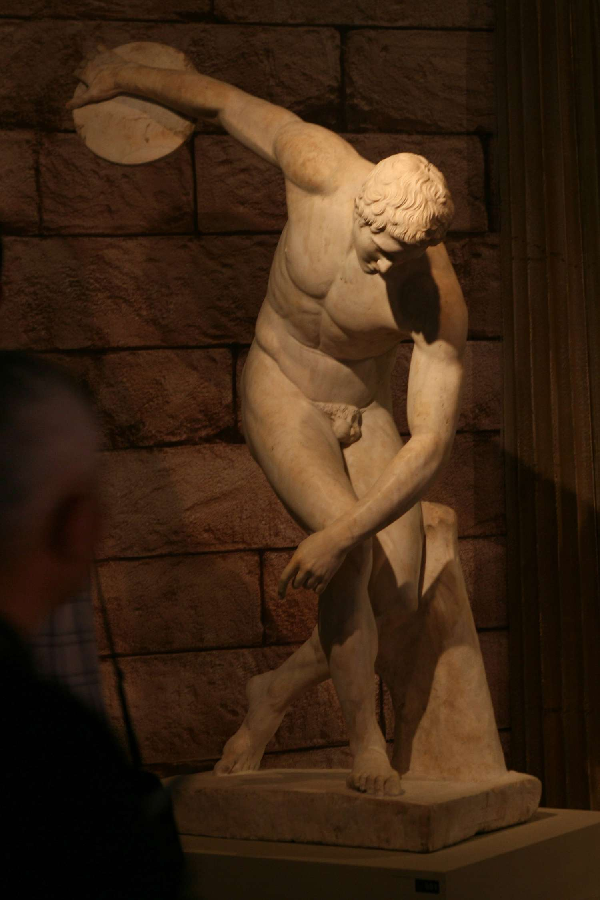

The Best Track and Field Event:Discus
Eddy Zheng
The discus is an event in the sport of Track and Field that traces back to the ancient Greek games. Now, it is one of four throwing events in the olympics. The discus is a metal disc coming in at 0.75kg (women's 75+) 1kg (women's), 1.6kg (Boy's highschool), 1.75kg (Men 19 under), and 2 kg (Men's senior) The farthest ever recorded men's throw is 243.5 feet, and 251.96 feet.
